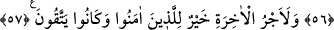

MISIR HAZİNELERİNE
TÂYİNİ
54. Kral: “Onu bana getirin, onu kendime özel danışman edineyim” dedi. Onunla
konuşunca da: “Bugün sen yanımızda yüksek makam sahibi ve güvenilir birisin.”
dedi.
55. (Yûsuf Kral’a:) “Beni ülkenin hazinelerine tayin et! Çünkü ben (onları) çok
iyi korurum ve bu işi bilirim.” dedi.
56. Ve böylece Yûsuf’a orada dilediği gibi hareket etmek üzere ülke içinde yetki
verdik. Biz dilediğimiz kimseye rahmetimizi eriştiririz. Ve güzel davrananların
mükâfatını zâyi etmeyiz.
57. İman edip de (kötülüklerden) sakınanlar için âhiret mükâfatı daha hayırlıdır.
Rivâyet edilir ki Mısır kralına sâki Yûsuf’un sözlerini söyleyince kral da onun yüzünü
görme arzusu arttı. “Kral: “Onu bana getirin, onu kendime özel danışman edineyim”
dedi.” Kendime has kılayım.
Müfti Sa‘dî şöyle der: “Kral, Yûsuf’u önce rüyâ yorumunu bildiği için çağırttı ve bu
sebeple sadece ‘onu bana getirin’ dedi. Yûsuf sonra bu yaptıklarını yapıp da güvenilir
olduğu, sabrı, himmeti, düşüncesinin üstünlüğü, ilk çağrısında kendisine gelmekte acele
etmemesi ortaya çıkınca kralın gözünde değeri arttı. Kral ikinci olarak: “Onu bana
getirin, onu kendime özel danışman edineyim.” diyerek çağırdı.
“Onunla konuşunca da” yâni görevliler Yûsuf’u krala getirip de kral onunla
konuşunca ondaki olgunluk ve dehâyı, yani isâbetli ve ileri görüşlülüğü müşâhede
edince: Ey dosdoğru sözlü kişi! “Bugün sen yanımızda” huzurumuzda “yüksek
makam” yüce mevki ve yüksek mertebe “sahibi ve güvenilir” kendisine her şey emanet
edilebilir “birisin.” dedi.”
Buradaki “bugün” lâfzı Yûsuf’un mevkiinin süreceği müddeti değil, konuşmasının
yapıldığı ânı gösteriyor. Maksad, makam sâhibi ve güvenilir olmanın bir süre sonra
başlayacağı ihtimalini bertaraf ederek başlayacağı zamanı tâyin etmektir.